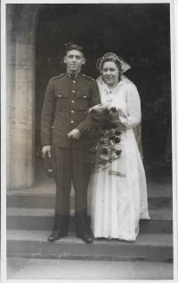
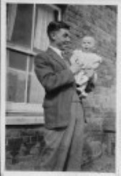
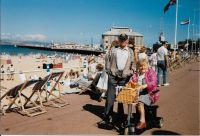

Albert William James Vickers
1920–1994
Photo Gallery

leaving church



at Gardeners Hall
Windsor

There are a number of photographs and Documents that refer to Bert's Army Service, these can be seen here.
Overview
Albert (Bert), was the first child of Albert and Rachel Vickers, born 1920 in Windsor Berkshire. .
Marriage and Children
Married Alice Dobson 1941.
Known children: Michael Vickers (1946–2019) and Barry Vickers (1948 -).
Timeline
1920: Birth in England.
1941: Marriage to Alice Dobson.
1946: Birth of son Michael.
1948:Birth of son Barry
1994: Death.